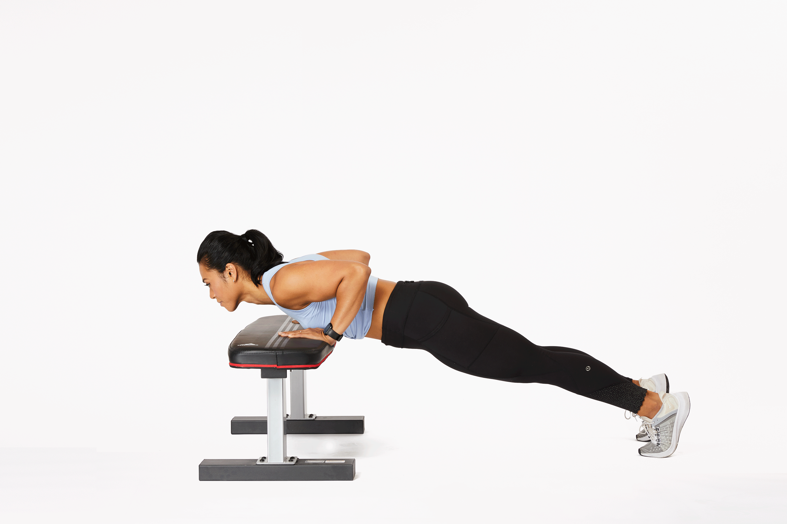
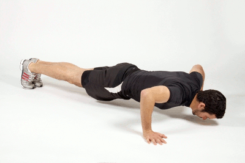
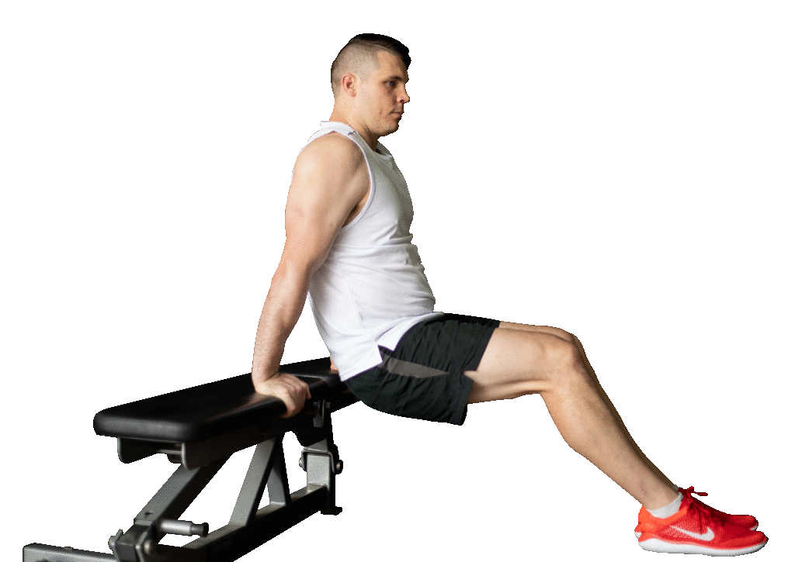
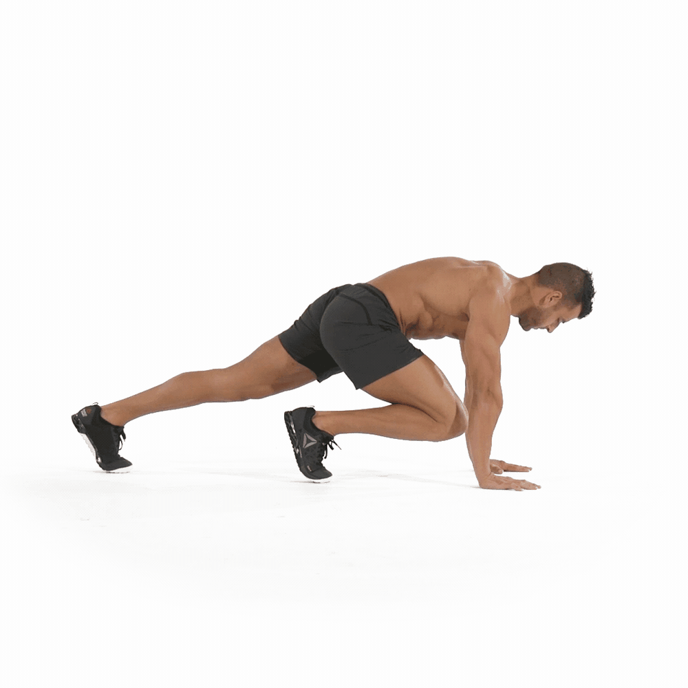

Home Workouts
Home
About
Blog
Workout Pacages
Contact us
Here goes all the steps of full body challenge!
You should continue this for 1 month
20 minitues per day
Step-1:Incline Push up
Stand facing the bench, table, or the edge of a bed.
Place your hands on the edge of the bench just slightly wider than shoulder width.
Bend your elbows to slowly lower your chest to the edge of the bench while inhaling.
Push your body away from the bench until your elbows are extended
Keep going with slow, steady repetitions.

Click Here To Watch The Video
Step-2:Widearm Push Up
Begin in your top of a push-up position with your arms straight
Step each hand a few inches wider.
As you inhale, bend your elbows out to the sides as you lower your torso toward the floor.
Complete as many reps as you can with proper form.

Click Here To Watch The Video
Step-3:TRICEP DIP
Sit on the edge of the chair and grip the edge next to your hips.
Lower yourself until your elbows
Slowly push yourself back up to the start position and repeat.
Begin with 3 sets of 10 repetitions and increase your sets

Click Here To Watch The Video
Step-4:Mountain Climber
Get into a plank position, making sure to distribute your weight
Pull your right knee into your chest as far as you can.
Switch legs, pulling one knee out and bringing the other knee in.
Keep your hips down, run your knees in and out.

Click Here To Watch The Video